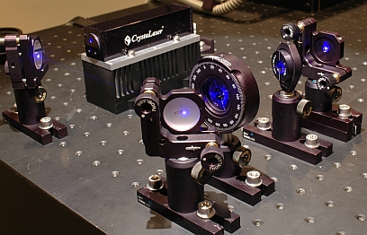

Aufbau eines quantenoptischen Experimentes
Übersicht
Quantenoptische Experimente sehen auf den ersten Blick unübersichtlich und mit den verschiedenen optischen Komponenten sehr komplex aus. Auf dieser Seite wird erklärt, aus welchen optischen Komponenten ein quantenoptisches Experiment besteht. Als exemplarisches Beispiel wird das Experiment zur Messung der Koinzidenzen Schritt für Schritt aufgebaut. Die Erklärung der optischen Komponenten und die Methode des Aufbaus erfolgt auf Schul- (Kapitel 1) und auf Universitätsniveau (Kapitel 2). Im Kapitel 3 geht es um die verwendeten Detektoren für einzelne Photonen und um die Methode zur Auswertung der Messdaten.
Kapitel 1: Aufbau eines quantenoptischen Experimentes für die Schule Kapitel 2: Aufbau eines quantenoptischen Experimentes für die Universität Kapitel 3: Detektoren und Datenauswertung

Typische Komponenten in einem quantenoptischen Experiment